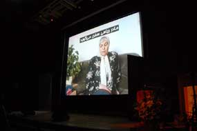
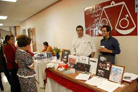

پذيرش > اخبار > مادران خاوران، زنان برگزیده سال بنیاد پژوهشهای زنان

 مادران خاوران، زنان برگزیده سال بنیاد پژوهشهای زنان مادران خاوران، زنان برگزیده سال بنیاد پژوهشهای زنان
16 تیر 1387 - - نسخه قابل چاپ
sanam@radiozamaneh.com
راديو زمانه-صنم دولت شاهي- برنامه زن سال کنفرانس بنیاد پژوهشهای زنان، جمعه ۴ جولای با نمایش فیلمی از روایتهای برخی از مادران خاوران از آنچه در دهه شصت و خصوصاً کشتار سال شصت و هشت رخ داد، شروع شد.
این فیلم مستند، دربرگیرنده روایتهای «مادر ریاحی» و «مادر لطفی» از تلاشهای مادران کشتهشدگان دهه شصت، برای به رسمیت شناخته شدن گورستان خاوران و تلاشهای این مادران در راه عدالتخواهی برای فرزندانشان بود.

این فیلم همچنین دربرگیرنده مستنداتی بود از قبیل عکسهایی از گورستان خاوران و جنازههایی که از گورهای کمعمق بیرون مانده بودند، تکه فیلمهایی از آوازخوانی خانوادهها در گورستان خاوران و تصاویری از روزنامههای سال شصت و شصت و هفت.
پس از آن، گلناز امین، دبیر بنیاد پژوهشهای زنان لوح تقدیر بنیاد را به مادران خاوران اهدا کرد:
«به مادران داغدیدهای که با دلیری و جسارت، پی فرزندان گرفتند، نام به خون خفتگان را همه جا آواز دادند، نگذاشتند نمودها و نمونههای ایستادگی مردمانمان به فراموشی سپرده شود. با پیکار و پشتکاری شبانهروز خاوران را برپا نگه داشتند و از آن گلزاری ساختند در دل ایران زمین، به مادران خاوران.»
لوح تقدیر بنیاد را به مادران خاوران، پای پارچهای که با نام بیش از چهار هزار نفر از قربانیان دهه شصت
پس از اهدا لوح که پای پارچهای گذاشته شد که بر روی آن نام بیش از چهار هزار نفر از کشته شدگان دهه شصت نوشته شده بود، میهن روستا درخواست کرد آن دسته از حاضرینی که نزدیکانشان را در کشتار دهه شصت از دست دادهاند، بایستند. سپس اعضای کمیته محلی برگزار کننده کنفرانس، به این افراد شاخههای گل سرخ اهدا کردند که با گریههای آرام حاضرین استقبال شد.
شری موراگا، سخنران افتتاحیه کنفرانس
شری موراگا، شاعر، نویسنده، و نمایشنامهنویس و فعال حقوق زنان، سخنران افتتاحیه کنفرانس بود. وی با اشاره به سابقه خانوادگی خود به عنوان یک زن مهاجر مکزیکی (چیکانا) در ایالات متحده به رنج زنان اقلیت و رنگینپوست و نادیده گرفته شدن آنها در جنبشهای فمینیستی پرداخت.
وی با اشاره به تجربه مشترک بسیاری از زنان اقلیت در تجربه وحشت و فقر و ترور و گرسنگی، از این تجربیات به عنوان عوامل محکمی در نزدیکی این زنان یاد کرد. او به تجاوز زنان در کشور مادریاش و مقاومت این زنان دربرابر جنگ و نسلکشی و خشونت و حرکت شجاعانه آنها در عبور از مرزها و مهاجرت برای رهایی اشاره کرد.
او همچنین به تلاش زنان مهاجر و در تبعید برای به خاطر سپردن سرزمین مادری اشان و انتقال خاطرههای سرزمین مادری به فرزندانشان و سختی حفط این خاطرهها اشاره کرد.
او یادآوری کرد که مطالعات زنان برای دههها در آمریکا بیشتر از زنان سفیدپوستی از طبقه بالای متوسط جامعه تشکیل شده که رنج زنان اقلیت را در نمییابند. او از حضار ایرانی پرسید که به دنبال پشتیبانی چه گروههایی در میان زنان آمریکایی هستند؟
«زنان اقلیت و رنگین پوست؟ بله، اگر چنین است باید به شما هشدار بدهم که این گروهها در خدمت گروه غالب در نیامدهاند. ما امتیازی نداریم که به شما ارائه کنیم. ما چهره دیگر مهاجرت هستیم. نوههای بردگان، دختران پناهندگان.»
وی با انتقاد از فمینیسم سفیدپوستان و شکست آنان در پاسخگویی و حتی توجه به زنان اقلیت گفت: «برقراری ارتباط فراملیتی و مقاومت در برابر حل شدن در فرهنگ کشور میزبان باید هدف فمینیستهای اقلیت باشد. سوالی که میماند این است که چطور با همه مسایلی که از یک طرف ما در سطح ملی و با کشور خودمان داریم و از طرف دیگر با امپریالیسم، میتوانیم در سطح فراملیتی نیز کار کنیم.
شری موراگا اظهار امیدواری کرد که نژادپرستی و امپریالیسم فرهنگی، مانع همکاری و همبستگی میان زنان اقلیت نشود.
بیانیه کمیته محلی: فراسوی جنبش فرعی بودن
کمیته محلی برگزارکننده کنفرانس امسال بنیاد که در دانشگاه برکلی برگزار شد، در بیانیه خود اشاره کردند که کنفرانس بنیاد پژوهشهای زنان که به شکل مستمر ۱۹ سال برگزار شده است، یک پل ارتباطی بوده بین کنشگران و علاقمندان جنبش زنان در گوشه و کنار جهان و توانسته با نقد و بررسی کلیشهها، انگارهها، قوانین و تابوهای زنستیز و جزماندیش نقشی کارساز در ارتقا سطح آگاهی این جنبش بازی کند.
در بخش دیگری از این بیانیه، نورا بیانی به نمایندگی از کمیته محلی کنفرانس امسال گفت:
«یکی از معضلات جنبش زنان ایران این بوده است که همواره به عنوان جنبش دوم نگریسته شده. پریروز انقلاب عمده بود، دیروز جنگ با عراق و امروز امپریالیسم آمریکا و خطر حمله نظامی.»
وی این موراد را دستاویزهایی دانست که جنبش زنان را در سایه قرار میدهند و به فضای سرکوب کمک میکنند.
او در ادامه به تشریح نگاهی پرداخت که کمیته محلی کنفرانس امسال، تحتتاثیر آن کنفرانس امثال را تدارک دیدند.
«شاید بتوان نگاه دیگری داشت، حرکتی سیال، جدی، منعطف اما محکم. فراسوی بایدها و شایدها، نبایدها و نشایدها، فراسوی نیک و بد، غرب و شرق، بومیگرایی و سلطهطلبی خارجی. دوسویه کردن این و یا آن. میتوان همزمان خواهان برابری حقوق زنان و آزادیطلبی بود و تشخیص ماهیت زنستیز جمهوری اسلامی. میتوان مخالف جنگطلبی و قدرتطلبی غرب بود و حمله نظامی به ایران.»
تاثیر سینما بر ضمیر ناخودآگاه و تثبیت کلیشه های جنسیتی
پرتو نوریعلا، شاعر، نویسنده، منتقد ادبی و عضو کانون نویسندگان، در سخنرانی خود با عنوان «لزوم شکستن الگوی زن سنتی در تصویر» به تشریح تصویر ارایه شده از زن در سینمای قبل و بعد از انقلاب پرداخت.
نوری علا گفت: «در سینمای ایران چه پیش و چه پس از انقلاب، به جز در چند فیلم معدود، بهطور کل تصویر زن چه بیحجاب و چه باحجاب با برداشتی سطحی و برآمده از فرهنگ سرگوبگر پدرسالار و مغایر با فرهنگ غالب پدرسالار همراه بوده است.»
وی با اشاره به تصویر سیاه و سفید زن در سینمای قبل از انقلاب، به بیان تاثیر سینما بر ناخودآگاه انسانها اشاره کرد و نتیجهگیری کرد که سینما در جامعه پدرسالار در واقع ابزاری است برای نهادینه کردن نقشهای سنتی زن به عنوان زن خوب و شناسایی زن بد یا بدکاره، به عنوان کسی که این نقشهای سنتی را پذیرا نیست.
خانم نوری علا با اشاره به فیلمهای ساخته شده در بعد از انقلاب، به نقش تبلیغاتی آنها برای دستگاه حکومتی و سیستم سنتی مردسالار پرداخت. برای نمونه وی به مساله زایمان اشاره کرد که در تمام فیلمهای ایرانی، بهجز در فیلمهای محسن مخملباف، غایب است.

میز فعالان کمپین میلیون امضا در کالیفرنیا
وی افزود در فیلمهای مخملباف هم، هرجا صحنه زایمان زنی وجود دارد، صحنه زایمان توسط زایمان حیواناتی مانند گاو یا گوسفند، به شکلی انتزاعی نشان داده می شود.
در پایان وی به فیلمهای تهمینه میلانی پرداخت و گفت با همه نواندیشیهای این کارگردان که خود را فیمینست میداند، باز هم فیلمهای او، مبلغ همان چهره زن سنتی است.
سخنان پرتو نوری علا با اعتراض بعضی حاضرین روبرو شد و برخی از سوال کنندگان با اشاره به فیلمهای فیلمسازانی از قبیل بهرام بیضایی و ناصر تقوایی، تذکر دادند که چهره سیاه و سفید ارایه شده توسط پرتو نوری علا، چهره دقیقی از واقعیتهای سینمای ایران نیست. نوری علا با تایید گفتههای اعتراضکنندگان، کمبود وقت را دلیل ذکر نکردن نمونههایی از چهرههای مثبت زنان در سینما اعلام کرد.
اولین روز نوزدهمین کنفرانس بنیاد پژوهش های زنان با اجرای آوازهایی بر اساس شعرهای سروده زندان، به خوانندگی گلرخ جهانگیری و نوازندگی ویولون میشا رفیعی ادامه پیدا کرد که این برنامه، پس از اجرای یک قطعه به دلیل مشکلات فنی متوقف شد.
برنامه روز اول این کنفرانس با اجرای تئاتر «در سوگ کاظم اشتری» به پایان رسید.
در طول دوران برگزاری کنفرانس نمایشگاه آثار هنری زنان ایرانی برپاست. همچنین غرفههای کتابهای نویسندگان زن ایرانی و میز فعالان کمپین میلیون امضا در کالیفرنیا در بخشی از سالن برگزاری کنفرانس، برپاست.
برای آگاهی از برنامه های کامل کنفرانس به اینجا مراجعه کنید.
راديو زمانه
ارسال به
بالاترین
،
توییتر
،
فریندفید
،
فیسبوک
در همين بخش :
 پروین ذبیحی برنده جایزه حقوق بشری سازمان غيردولتى اتريشى سودويند شد پروین ذبیحی برنده جایزه حقوق بشری سازمان غيردولتى اتريشى سودويند شد
پخش کارت پستال و بروشور در روز جهانی زن در تهران
تمدید زمان برای امضای بیانیهی جمعی از فعالان زن به مناسبت هشت مارس
مجوزی که در نطفه خفه شد
بیش از 2000 امضا در اعتراض به تبعیض های آموزشی به مجلس تحویل داده شد
ديگر بخش ها :
طرح یک میلیون امضا
|
مقالات
|
سایت نوشته ها
|
اخبار
|
گزارش كمپين
|
گفت و گو
|
علیه سکوت
|
كوچه به كوچه
|
نامه های شما
|
گزارش ویژه
|
گفتگو با اعضا
|
ویژه سالگرد کمپین
|
تصویر برابری
|
دل آرام علی
|
تریبون
|
مقالات
|
تاریخ شفاهی
|
خارج از چارچوب
|
کتابخانه
|
درباره کمپین
|
کمپین در شهرها
|
کمپین در بند
|
صدای تغییر
|
ویژه 22 خرداد
|
لایحه حمایت از خانواده
|
گالری
|
عشا مومنی
|
امیر یعقوبعلی
|
خدیجه مقدم
|
راحله عسگری زاده و نسیم خسروی
|
پروین اردلان،جلوه جواهری، مریم حسین خواه، ناهید کشاورز
|
زینب پیغمبرزاده
|
سعیده امین، سارا ایمانیان، محبوبه حسین زاده، ناهید کشاورز و همایون نامی
|
احترام شادفر
|
نسیم سرابندی زاده،فاطمه دهدشتی
|
وبلاگ مهمان
|
پرونده خرم آباد
|
دستگیری ها
|
مریم مالک
|
پرستو اللهیاری
|
مهرنوش اعتمادی
|
سمیه رشیدی
|
Other Languages
|
همراهان
|
«فراخوان کمپین ده روز با بهاره هدایت»
| English
|